Same gpt-5.4-mini + thinking-in-space render pipeline, but each trajectory
starts from a free-space pose at a random yaw where the target object is off-frame
(occlusion-aware geometric check). The model must explore to find the object before
it can answer — so every GOOD trajectory here is explored-to-find by construction, unlike the plain
run where the object was usually already framed at the start. The first frame in each strip
(orange border) is the hidden start.
Step statistics — GOOD bank
316
explore GOOD trajectories
68
distinct scenes
100%
explored-to-find (by design)
1.55
mean move-steps (GOOD)
2.07
mean move-steps (all attempts)
28%
GOOD using ≥3 views
Views per GOOD trajectory
2 views228 (72.2%)
3 views47 (14.9%)
4 views17 (5.4%)
5 views11 (3.5%)
6 views7 (2.2%)
7 views4 (1.3%)
8 views2 (0.6%)
vs. visible-start bank
start-hidden
visible-start
mean views
2.55
2.11
mean move-steps
1.55
1.11
GOOD using ≥3 views
27.8%
7.4%
start object visible
0% (hidden)
~50%
Hidden starts add ~40% more move-steps in the GOOD bank
(1.55 vs 1.11); the full attempt set averages
2.07 steps with a real tail hitting the 8-view cap.
30 examples (multi-step first)
Q733 · scene0012_00
· 6 move-step(s)
How many chairs are kept near the coffee table?
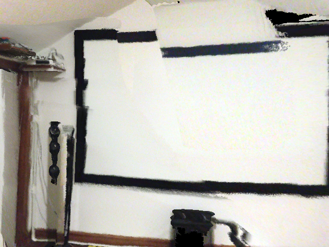
start (object off-frame)
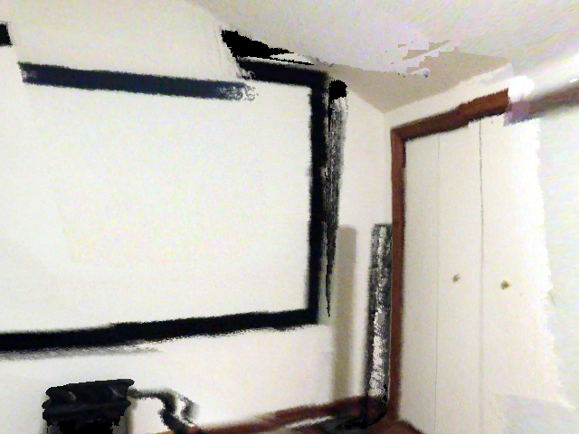
turn 1
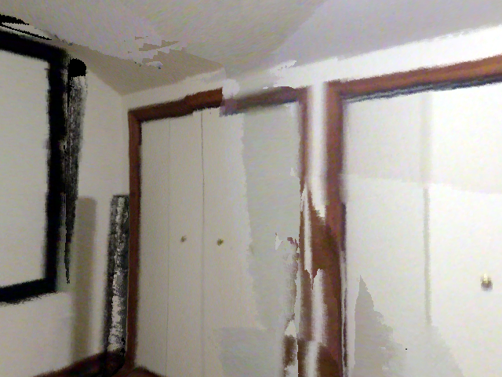
turn 2
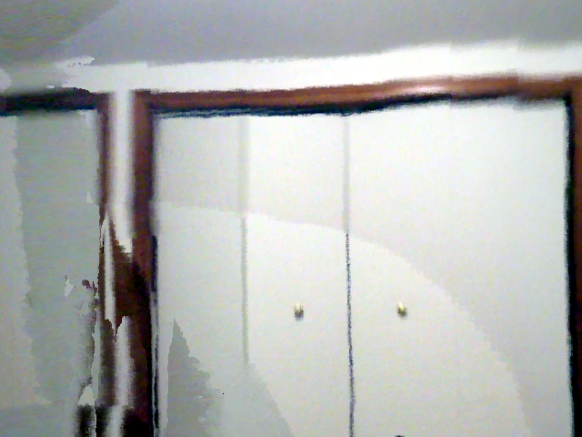
turn 3
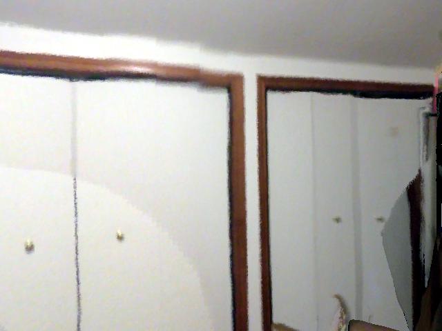
turn 4
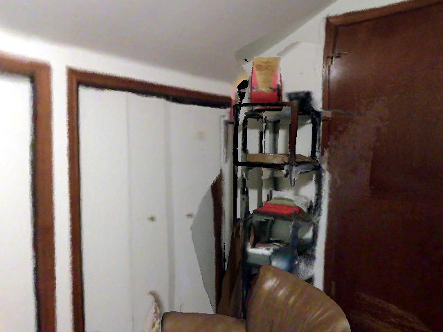
turn 5
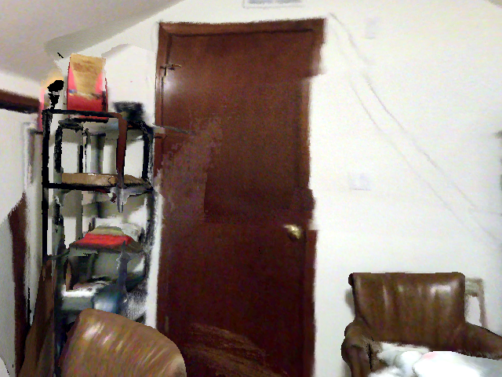
turn 6
turn 0turn_right
I can’t reliably see the coffee table or any chairs from this starting view, so I need to move to get a better angle before answering.
turn 1turn_right
The current view shows a wall, projector screen, and closet, but no coffee table or chairs. I should move to a different viewpoint to locate the seating area.
turn 2turn_right
This view still only shows closets and a wall; the coffee table and chairs are not visible. I need to rotate further toward the seating area.
turn 3turn_right
The camera is still facing the closets, not the coffee table. I need a different direction, likely continuing the turn, to find the seating area with the table and chairs.
turn 4turn_right
The view still does not show the coffee table, but this room seems to have a seating area elsewhere. I should continue turning to locate the table and chairs directly before answering.
turn 5turn_right
This view shows the corner with shelving and a chair/sofa arm, but still not the coffee table area clearly. Since the question asks for chairs near the coffee table, I need to locate the table itself, likely by turning further right or moving slightly to bring the living area into view.
turn 6⟨answer⟩
The coffee table is still not visible, but I can see two chairs in the frame. Since the question asks how many chairs are kept near the coffee table, and this appears to be the seating area around it, the likely count is two chairs.
The door is not clearly visible in this starting view, so I should move to get a better look at the room and door area before answering.
turn 1turn_right
The door is still not visible; I need to keep exploring. Turning further right may bring the door into view.
turn 2turn_right
I can see an office-like scene, but the door is still not in view. I need to move or turn further to locate the door and inspect its handle type.
turn 3turn_right
The door still isn’t visible, but this view shows an office wall and furniture; I need to keep searching for the door before I can identify its handle.
turn 4turn_right
I still don’t see a door here; this view shows a desk and shelves. I need to keep turning to locate the door and inspect its handle.
turn 5⟨answer⟩
The door is now visible. It has a metallic lever-style handle, not a knob.
The current view only shows part of a bed and wall; the little table is not visible yet. I need to move to get a better view of the room and locate the table and what is next to it.
turn 1turn_right
The new view still mostly shows the bed, curtain, and wall; the little table is not clearly visible yet. I should keep turning to bring more of the room into view, especially near the bed where a little table is likely placed.
turn 2turn_right
The view is still dominated by curtain and a washed-out bright area, so the little table is not yet visible. I should turn further to find the table and what is beside it.
turn 3turn_right
The view is now overexposed and only partially useful, but I can make out the bed edge and curtains; the little table still isn’t clearly visible. I need a better angle, so I’ll keep turning to bring the bedside area into view.
turn 4⟨answer⟩
Now the little round table is visible, and next to it I can see a chair. The most obvious object beside the little table is the chair.
How many desktop computers are on the smallest table?
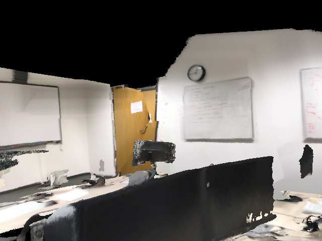
start (object off-frame)
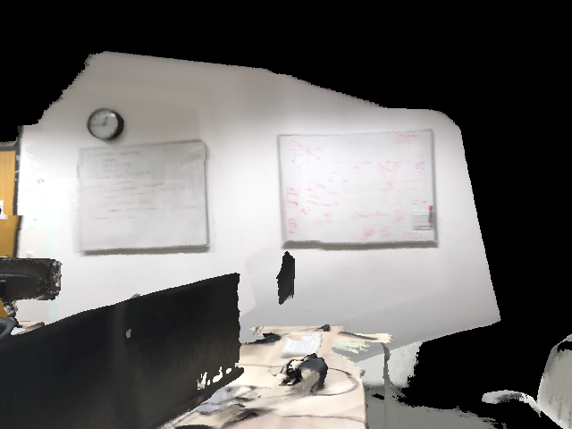
turn 1
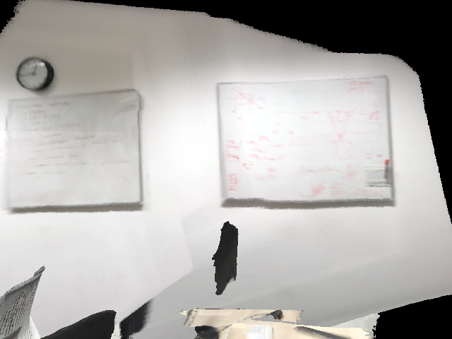
turn 2
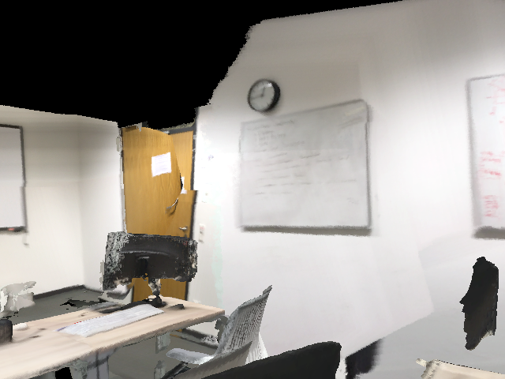
turn 3
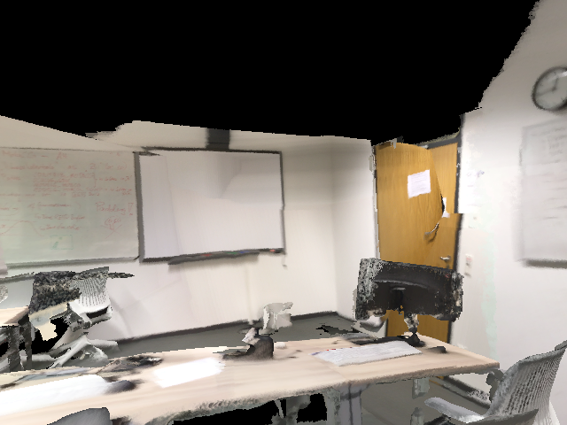
turn 4
turn 0turn_right
The current view is partially blocked, and the smallest table is likely on the right side. I need a clearer look at the desktops, so I should move to improve the view. Turning right may reveal the smaller table better.
turn 1forward
The view now shows part of a desk/table area, but the smallest table and its desktop computers are still not clearly visible enough. I should move closer/adjust to get a better angle on the tables, likely by moving forward.
turn 2turn_left
The new view shows wall boards and no tables, so I still can't directly count the desktop computers on the smallest table. I need to adjust toward the furniture area, likely by turning left to bring the tables into view.
turn 3turn_left
I can now see a desk area with a computer monitor on the left. However, the question asks about the smallest table, and the full table arrangement is still not clearly visible. I should continue moving/turning to inspect the furniture cluster and identify the smallest table and how many desktop computers are on it.
turn 4⟨answer⟩
The view now clearly shows a table with multiple desktop monitors. The smallest table appears to be the small desk in the foreground/right area, and I can see one desktop computer on it. Therefore the answer is 1.
Where is the picture of an outdoor scene in a gold frame?
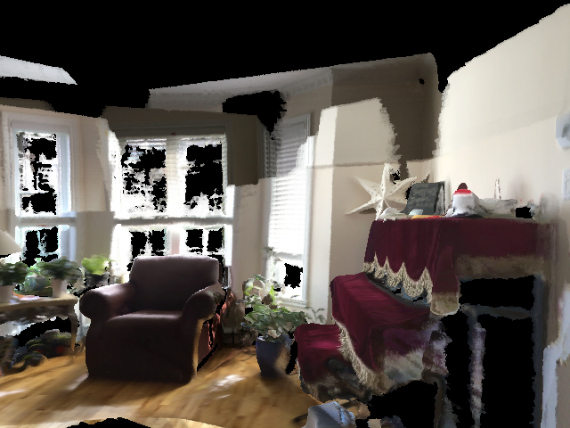
start (object off-frame)
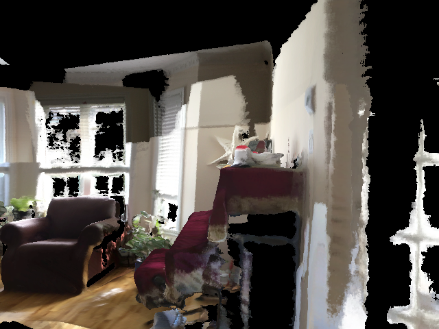
turn 1
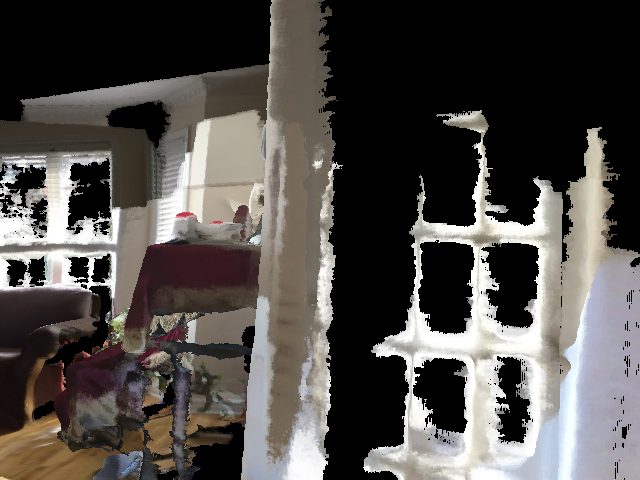
turn 2
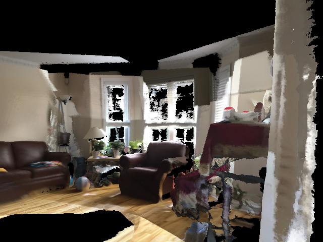
turn 3
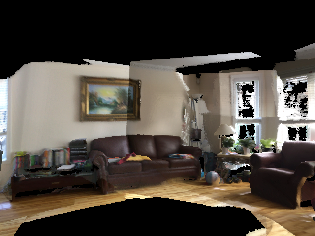
turn 4
turn 0right
The gold-framed outdoor picture is likely on the right side near the mantel/fireplace, but the current view is partially obscured. I should move right to get a clearer view of that wall area.
turn 1right
I can see a wall-mounted picture to the right of the fireplace area, but the gold frame isn't clearly visible yet. I should move a bit closer/right again to inspect that wall.
turn 2turn_left
The gold-framed outdoor picture is not clearly visible from this angle, and the coverage is worse. I should stop moving sideways and instead turn left a bit to face the wall near the fireplace more directly.
turn 3turn_left
The turn left shows the fireplace/right wall area more clearly, but the specific gold-framed outdoor picture still isn't fully visible. I should keep turning left a bit to bring that wall into view.
turn 4⟨answer⟩
The picture is now visible: it is the gold-framed landscape hanging on the wall above the brown couch, on the left side of the room near the center of the current view. I can answer confidently.
answer: Above the brown couch on the left side of the room.
· GT: wall above couch
The current view is too close to a wall/objects and doesn't clearly show the gray square ottoman. I should move to get a wider, more informative view of the room.
turn 1turn_right
I now have a wider view, but the gray square ottoman still isn't visible clearly. I need to change viewpoint further to locate it, likely by turning toward the room interior.
turn 2turn_right
The ottoman is not clearly visible yet, but I can see a seating area on the right side; the gray square ottoman is likely beside the chair/sofa in that corner. I should continue turning a bit to bring that area into view more directly.
turn 3⟨answer⟩
The right side seating area is now visible. I can see a tan sofa, an armchair, and a low square gray ottoman/table in front of the armchair near the wall. So the gray square ottoman is beside the armchair and next to the sofa in the seating area.
answer: The gray square ottoman is in the seating area, next to the armchair and in front of the sofa, against the wall on the right side of the room.
· GT: beside couch
I can’t clearly see the music stand from this initial view, so I should move to get a better angle before answering.
turn 1turn_right
The new view still doesn’t clearly show a music stand. I can see some furniture, but the likely object is not centered. I should keep exploring with another turn to bring more of the room into view.
turn 2turn_right
The music stand is likely near the chairs/benches on the right side, but it still isn’t clearly visible. I need one more move to get a clearer view of that area.
turn 3⟨answer⟩
The music stand is now visible on the right side, next to the chair/bench seating. Since the question asks what it is next to, the clearest adjacent object is the chair.
I can see furniture and a chair, but not the bed yet. I should move to get a broader view of the room, likely by turning to scan the space first.
turn 1turn_right
The current view still shows mostly a desk and chair, with no bed visible. I need a different angle, likely moving forward or turning further to reveal more of the room. I'll turn right again to scan farther across the space.
turn 2turn_right
The view still shows the desk and chair by the window, but not the bed. The bed is likely elsewhere in the room, probably to the left or behind me relative to this current view, so I should keep rotating to find it.
turn 3⟨answer⟩
The bed is now visible on the right side of the view, next to the window. I can answer confidently based on this view.
answer: The bed is on the right side of the room, next to the window.
· GT: in front of window / right of night stand
The current view is too close and mostly occluded, so I need to move to get a better look at the desk and nearby chairs. I’ll step backward first.
turn 1turn_right
The brown desk is visible, but the chairs are still not clearly in frame. I need a better angle, likely by turning to face the desk and seating area more directly.
turn 2⟨answer⟩
The view now clearly shows the brown desk at right, and I can identify two chairs facing it: one in the center/back and one on the left foreground. So the desk is facing 2 chairs.
Where is the green chair next to another green chair?
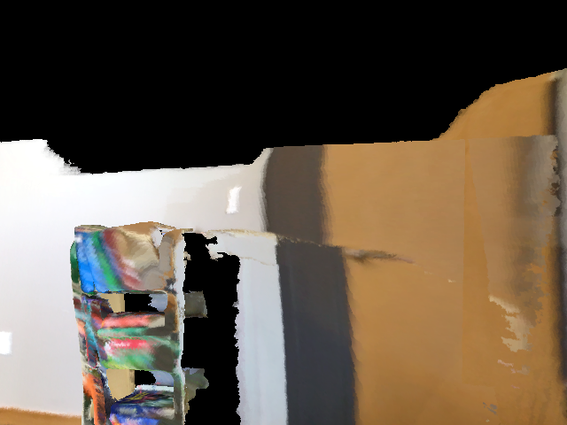
start (object off-frame)
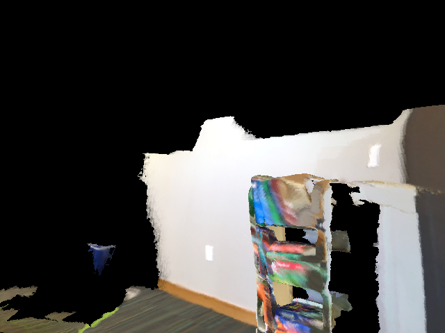
turn 1
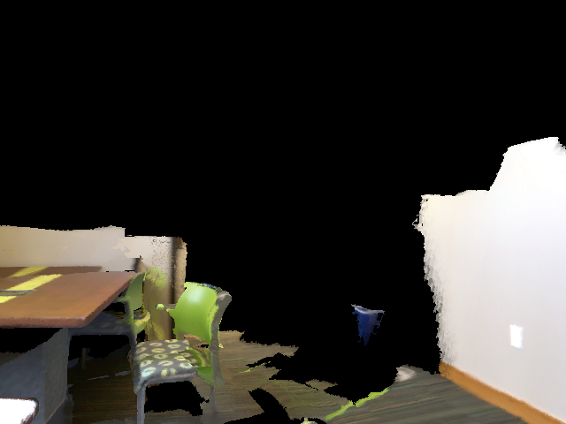
turn 2
turn 0turn_left
The current view is too close/rotated and the chair is only partially visible on the left. I should move to get a clearer look at the chair cluster and determine where the green chair is relative to another green chair.
turn 1turn_left
I can now see a pair of green chairs near the colorful stacked chairs area, but the view is still not centered on them. Turning slightly more left should bring the chairs into clearer view so I can answer their location accurately.
turn 2⟨answer⟩
The green chair pair is now clearly visible on the left side of the view, next to each other by the table. The question asks where the green chair next to another green chair is, so its location is on the left side of the scene, beside the table.
answer: On the left side of the scene, next to the table.
· GT: at brown table
I can partially see a table and chairs, but the round table on the carpet is not clearly visible from this starting angle. I should move to get a better view before answering.
turn 1turn_right
The turn-right view shows a tabletop and chairs, but not the round table on the carpet clearly enough. I should adjust further to bring more of the room and floor area into view.
turn 2⟨answer⟩
The round table visible on the left appears to have a light wood/tan top. The question asks for the color of the round table on the carpet, so the answer is tan/brown.
The current view is dominated by a couch and wall, and chairs are not visible yet. I should move/turn to explore the room and locate them before answering.
turn 1turn_right
The turn-right view still mostly shows the couch and a dark chair-like object at the right edge, but the chairs are not fully clear. I should keep exploring to get a better, more centered view of the seating area.
turn 2⟨answer⟩
The chairs are now visible: two chairs are placed side by side near the wall, on the right side of the seating area.
answer: They are side by side against the wall on the right side of the room.
· GT: against wall
I can see a desk with office chairs and computer monitors, but the area under the desk is not clearly visible from this starting view. I should move to get a better look under the working desk.
turn 1turn_down
The desk surface is visible but the view is still partly occluded and under-desk area is not clear. I should adjust viewpoint further, likely turning to inspect beneath the desk.
turn 2⟨answer⟩
Now the under-desk area is visible. I can see a black drawer cabinet or pedestal placed beneath the working desk on the left side.
Where is the chair placed in the center of the room?
start (object off-frame)turn 1turn 2
turn 0backward
The current view shows mostly the kitchen area, but the chair in the center of the room is not visible. I need to move to get a broader view of the room, likely by stepping backward or turning to find the chair.
turn 1left
The new view is still focused on the kitchen and part of a table on the left, but it does not clearly show the chair in the center of the room. I should turn to look more toward the room’s center.
turn 2⟨answer⟩
The chair is now visible near the center area, tucked by the table in the middle of the room. It appears placed beside the table, facing into the room.
answer: It is placed next to the table in the center of the room.
· GT: at table
I can see a black refrigerator and part of the sink area, but the paper box above the sink is not clearly visible from this starting view. I should move to get a better angle on the sink/counter area.
turn 1turn_left
The sink area is now visible, but the paper box above it is still not clearly in frame. I should adjust slightly to center the wall above the sink.
turn 2⟨answer⟩
(no think)
answer: The paper box above the sink is black.
· GT: black
The current view is mostly a wall and doesn't show the sofa chair. I should move/turn to search the room and locate the large black sofa chair before answering.
turn 1turn_right
The view now shows a dining area with tables and chairs, but not the large black sofa chair yet. I should keep exploring in the direction of the room, likely moving forward or turning further to reveal adjacent seating.
turn 2⟨answer⟩
The black sofa chair is visible on the right side of the current view, placed along the right wall near the seating area and beside the low table. Since it is clearly in frame now, I can answer.
answer: On the right side of the room, along the wall next to the table.
· GT: right of black couch
The current view is too close and mostly shows a wall/sofa edge, so I need to move to get better spatial context and locate the chair.
turn 1turn_right
This view still mostly shows the couch and wall, but I can see a chair-like object partly on the right side. I need a bit more rightward turn to confirm its position in the room.
turn 2⟨answer⟩
The chair is now visible on the right side of the room, near the couch.
The white towel is only partially visible at the far right edge, so I need a slightly different viewpoint to confirm its location relative to nearby fixtures. I’ll move right to bring that side into view.
turn 1⟨answer⟩
The white towel is hanging on the wall-mounted towel rack/rod in the bathroom, on the right side of the scene.
answer: On the wall-mounted towel rack/rod on the right side of the bathroom.
· GT: above toilet
The current view already shows the shower curtain on the left side, and it appears to be off-white/cream. I should move slightly to confirm, since I’m required to explore first.
turn 1⟨answer⟩
(no think)
answer: The shower curtain is beige/cream.
· GT: tan / tan
What color office chair is pushed against a wooden table?
start (object off-frame)turn 1
turn 0turn_right
The current view is too obscured to identify the chair color confidently. I should move to get a clearer view of the table and chair area, likely by turning right toward the visible office furniture.
turn 1⟨answer⟩
The view now clearly shows a wooden table with an office chair pushed against it. The chair appears dark gray/black in color. I’m confident enough to answer.
I can already see a bathroom-like scene with towels hanging on a rack, but the question asks what is hanging on a white door. I should move to get a clearer view of the white door area and confirm the object.
turn 1⟨answer⟩
The white door is visible on the right, and there is a towel hanging on it.
The current view is blurry and only partially shows the wall and a wooden door. The question asks what is attached or built in on the wall, so I need a clearer look at the wall fixtures. I should move/turn to inspect the wall more directly.
turn 1⟨answer⟩
The wall fixture is now visible: there is a wall-mounted lamp/light attached to the wall. That is the built-in/attached object being asked about.
I can see a window and walls, but no chair with arms is visible yet. I should move to get a better view of the room contents, likely turning toward the interior.
turn 1⟨answer⟩
The chair with arms is now visible on the right side of the view, and it appears to be black/dark-colored.
I need to inspect the scene from another angle before answering, since the current view only partially shows the table and chairs.
turn 1⟨answer⟩
The table is on the right, and I can see three chairs associated with the table on its far/right side from this viewpoint. Therefore, the side with 3 chairs is the right side.
The current view is too partial, but beige wooden cabinets are visible ahead/right. I should move to get a clearer sense of their placement relative to the room, likely by turning toward them.
turn 1⟨answer⟩
The beige wooden cabinets are mounted on the kitchen wall above the countertop and sink, with additional matching lower cabinets below the counter near the refrigerator.
answer: They are in the kitchen, mounted along the wall above the sink/countertop, with matching lower cabinets beneath the counter.
· GT: above kitchen counter